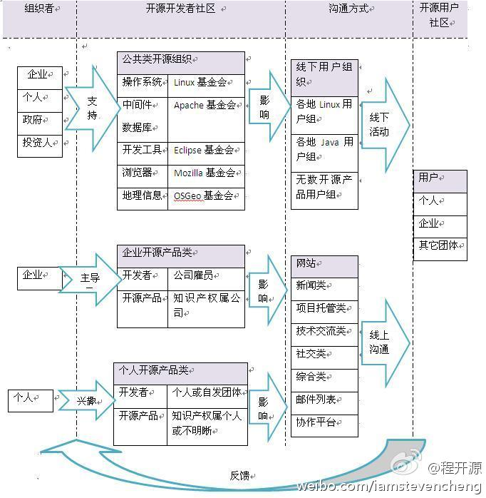

很不错的总结. @程开源:花了大半天时间梳理出了开源社区的生态图。 大家给点评价吧，觉得合理就转一下吧。。。 @Richard宫文学 @ben_杜玉杰 @Ada李力 @黄国荣Galen @Richard秦红胜 @开源中国OSS社区_张阳 @Linuxeden开源社区 @优盟通讯--鲁璐 @李广生 @北京创客空间 
读得这么认真? 佩服佩服 @InfoQ @图灵谢工 知道会很开心的. //@Gator: 收到图书，谢谢@Ada李力 学习中。做基础架构的读《架构师》的感受是，1/3文章舒服，1/3有些吃力，1/3读不懂但下点功夫后勉强能读下去。@Ada李力:感谢@图灵谢工 提供的《架构师》QCon杭州2011特刊。这回尝试做个发行商，好东西要大家分享，还有七本，送给“架构师”微群里的朋友，需要的朋友在“架构师”微群里此帖下留言，注明技术方向。留言在前七位的，直接把邮寄地址发微博私信给我就可以了，稍后我会寄给大家。